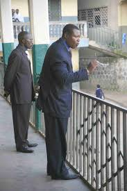

Progresive was founded by Mr YONG FRANCIS in the yaer1966 and the school was called PSS Mankon and later changed into PCHS Mankon.the principal of this one school is Mr Azeh David Mufor,this is one of his photo

he has been principal of progresive since 1966 up till date.
The campose is made up of a large accembly ground,an administrative block made up of :
fuhter more
this vidio will tell you more